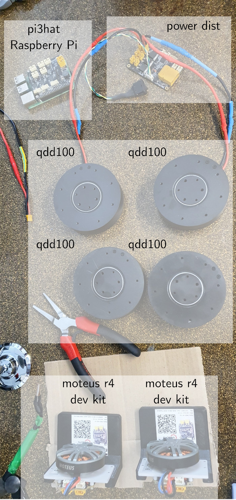
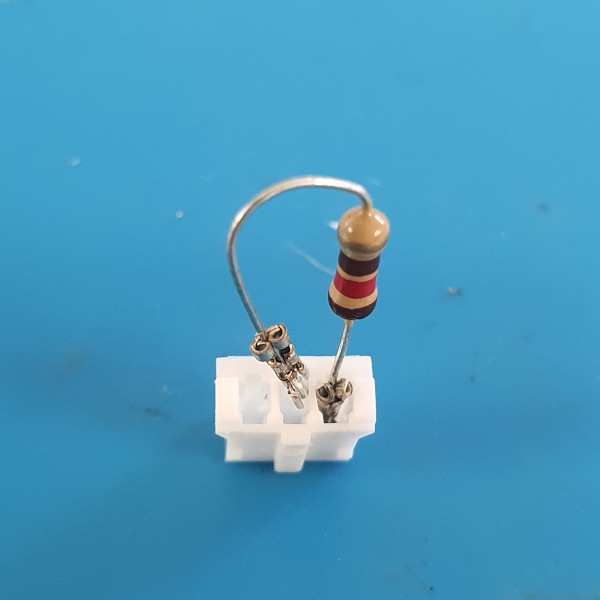
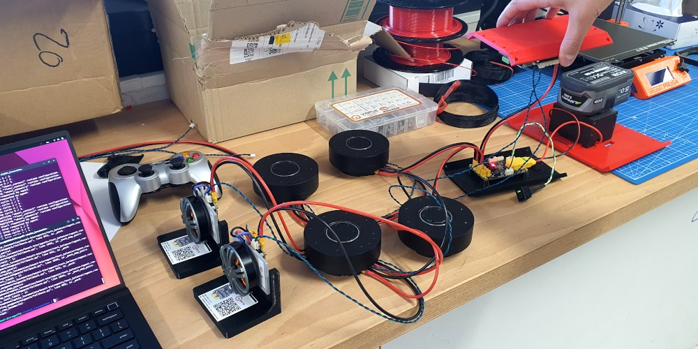

The prerequisites for this stage are:
4.1) Prepare the testing table

We are going to test the electronics on a table as depicted to the right. We will connect the components as follows. In case of doubt, you can always go back here for a complete map of the connections:
- Raspberry Pi with a pi3hat, connected to:
- the power dist board by a short male-female power cable
- a hip qdd100 by a comms cable
- a hip qdd100 by a comms cable
- (Optional: the power dist board by a comms cable)
- Power dist board, connected to:
- the battery by an XT-90 power cable
- the pi3hat by a short male-female power cable
- a hip qdd100 by a short male-female power cable
- a hip qdd100 by a short male-female power cable
- (Optional: Connected to the pi3hat by a comms cable)
- Hip qdd100's, two of them, each connected to:
- the power dist board by a power cable
- the pi3hat by a comms cable
- a knee qdd100 by power and comms cables (daisy chaining)
- Knee qdd100's, two of them, each connected to:
- a hip qdd100 by power and comms cables (daisy chaining)
- a wheel mj5208 by power and comms cables (daisy chaining)
- Wheel moteus r4 dev kits, two of them, each connected to:
- a knee qdd100 by power and comms cables (daisy chaining)
Daisy chaining is the wiring scheme used in both legs, in which hip, knee and wheel actuators are wired together in sequence. We use it both for power and comms, each leg having its own communication bus. More details on comms and power cables are listed in the Cables page.
4.2) Power up the power dist board
- Connect the power switch to the power dist board
- Connect the XT90-S connector from the battery stud to the power dist board
- Insert the battery into the battery stud
- Power up the system by flipping the switch
If everything went right, a red LED should turn on on the power dist board.
4.3) Power up the Raspberry Pi and pi3hat
- Insert the pi3hat on top of the Raspberry Pi and screw it using the 4 nuts, screws and hex spaces distributed with the pi3hat
- Power off the system (never connect or disconnect power cables when the system is powered)
- Connect the pi3hat to the power dist board using a male-female XT30 cable
- Power on the power dist board
If everything went right, red LEDs should turn on on both the pi3hat and power dist board.
4.4) Configure each servo
Use tview and the moteus dev kit setup to configure the identifiers (id.id) of each servo. To configure one servo:
- Connect it to your computer via USB
- Go to the configuration tab
- Set
id.id to the desired value (this will write a conf set command in the console)
- Close
tview and restart it with the new ID, e.g. tview -t X
- Check that the console contains a list of configuration parameters (if it is empty, there is a communication issue)
- Execute the command
conf write in the console to save the new ID permanently
Configure your qdd100 and mj25208 actuators as follows:
| Type | id.id | Joint |
| qdd100 | 1 | Left hip |
| qdd100 | 2 | Left knee |
| mj5208 | 3 | Left wheel |
| qdd100 | 4 | Right hip |
| qdd100 | 5 | Right knee |
| mj5208 | 6 | Right wheel |
4.5) Connect and test the left hip
- Power off the system (never connect or disconnect power cables when the system is powered)
- Connect the left hip servo to the power dist board (power) and JC1 connector on the pi3hat (comms)
- Power on the system and log into the Raspberry Pi:
ssh pi@upkie
- Run
sudo moteus_tool -t 1 -c
- Test the comms with a
conf enumerate command (documentation)
- Test the servo with
d stop and d pos commands (tutorial, documentation)
4.6) Terminators

Terminators ensure communications don't get jumbled. We need them because of our relatively long 40-cm comms cables. Follow these instructions to make them:
- Crimp both ends of a 120 Ohm resistor with JST PH crimps
- Insert those ends into the
CAN_H and CAN_H holes of a JST PH-3 connector (see Cables)
- Put heat shrink around the resistor and shrink it
Alternatively, you can buy a JST PH3 CAN-FD Terminator directly from mjbots. Those can achieve a better bandwidth over long daisy chains than the one-resistor terminators we built above, although on Upkie that level of performance is not really required.
4.7) Connect and test all servos

- Power off the system (never connect or disconnect power cables when the system is powered)
- Connect all servos by daisy chaining:
- The left leg (servo IDs 1, 2, 3) goes to bus 1 (JC1 connector on the pi3hat)
- The right leg (servo IDs 4, 5, 6) goes to bus 3 (JC3 connector on the pi3hat)
- Remember to put terminators (120 Ohm resistors) in the free data connector of each wheel servo
- Power on the system and log into the Raspberry Pi:
ssh pi@upkie
- Run
sudo moteus_tool --pi3hat-cfg "1=1,2,3;2=4,5,6" -t X -c for each servo ID X
- Test the comms with a
conf enumerate command (documentation)
- Test the servo with
d stop and d pos commands (tutorial, documentation)
Ask questions about this step in Hardware discussions.
Previous: 3) Raspberry Pi setup — Next: 5) Motion control software
{kind=link}
{kind=link}
{kind=link}
 1.8.20
1.8.20